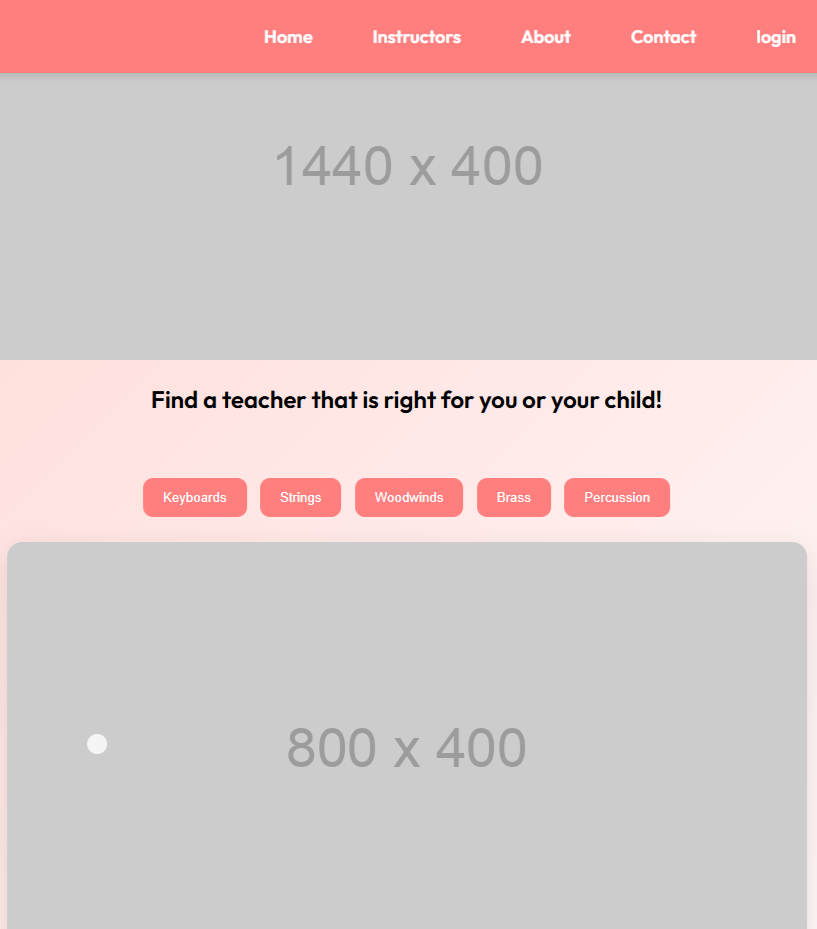
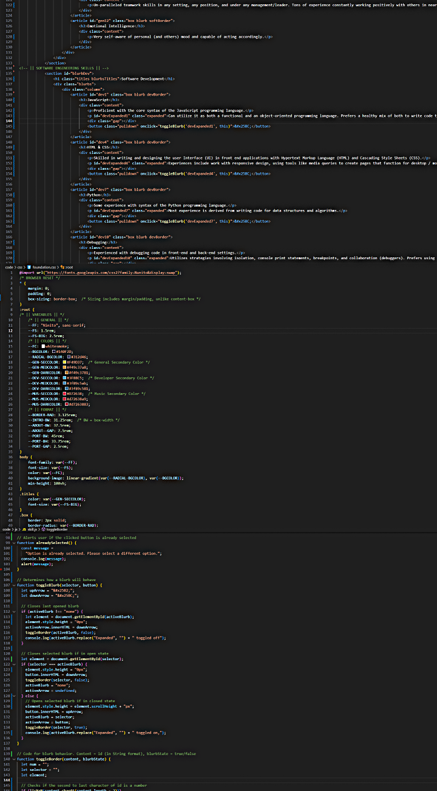
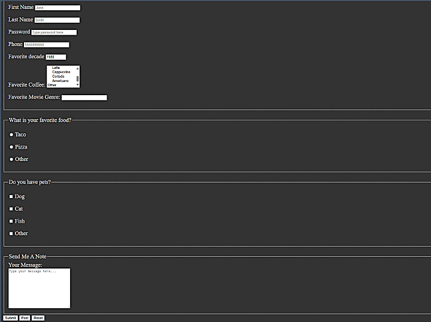
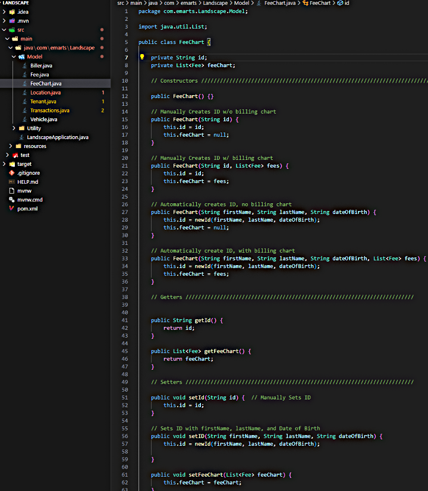
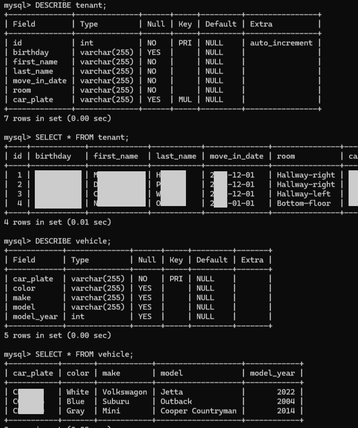

Developer Portfolio
Evan’s newest foray into software development involves combining his passion for development with his passion for music. Being as incredibly involved with the Washington state music community as Evan is, he has a very high level of understanding of the needs and wants of those within it. This includes the desires of educators, students, and hobbyists at all levels of skill. This also likely applies to communities outside of the Washington music community.
He is building an application that would conveniently connect music educators and aspiring music students. The goal is to give freelance educators a more standardized platform to work with their students. This would be dedicated solely for music educators and their studio of students because of the unique dynamics that private musical lessons compared to other academic areas.
Evan plans to use this website as an opportunity to learn more about popular frameworks & tech relevant to the JavaScript space. This project is still in early-development.
Music Education Software Service (Unnamed)
A mock-up of the home page for the music education service.
Personal Website
Some of the HTML, CSS and JavaScript code for this website.
This Website is Evan’s first practical solo project to be completed. It features a personally designed and fully featured front-end user experience, including animations, menus, synchronous & asynchronous functions, and other dynamic features.
Evan created this website using pure HTML, CSS and JavaScript without the use of any framework or external APIs (except a single external font) with the goal of proving that he can build a website completely from scratch, using only his knowledge of these languages and fundamental programming practices.
He also used it as an opportunity to help fill the gaps in his knowledge by creating problems he had never worked on before and figuring out how to solve it with his problem-solving and research skills. He intentionally chose not to use frameworks because he felt he would not receive the fundamental experience he gained while building without them.
Evan’s style of coding boasts a clean and descriptive look in each of the languages, where necessary code is reused in such a way that overall lines of code are reduced but doesn’t over-abstract, making it easier for others to understand. Comments for functions in JavaScript are designed to help developers understand them, selectors in CSS are labeled for purpose and precision, and HTML semantics are very intentionally used to promote easy readability.
This website serves as Evan’s personal online portfolio for both music and Software Engineering and will continue to provide this function for the foreseeable future. It also serves as an opportunity to gain future experience by studying, maintaining and updating old code when necessary.
This was Evan’s first website, intended as a learning opportunity. Built purely from HTML, he learned the fundamentals of HTML through hands on experience.
While learning about the many features core HTML offers, Evan was able to implement forms, links, images, menus (drop-down, multiple choice, etc.), other file sources, and more. He also learned with accessibility in mind. and how to write with clean semantics, utilizing all block-level elements and comments to help guide other developers. This website attempts to make a practical implementation of nearly every feature offered in HTML.
Although he prefers deferring code to separate CSS and JavaScript files, when necessary, Evan is fully capable of writing the features of a webpage all in HTML documents.
First Website
A portion of Evan's first website written on nothing but HTML (and slight CSS).
"Landscape" Landlord Project
Portion of the MySQL DB model code for Landscape's back end
“Landscape” was one of Evan’s first ideas he had for a full-stack application that he wanted to build. Evan is acting landlord of a house with several roommates and pets. He collects and handles finances, deals with repairs and maintenance, and other activities. It would be practical for him to make an application that would support his endeavors as landlord. “Landscape” was an idea for an application that would allow Evan to easily perform CRUD operations in a database for things related to his job as landlord.
The project is still a work in progress. The database model was built in MySQL (more information in the next portfolio piece), and a back end was built using the Java programming language, along with support from the Spring, Hibernate, and JDBC frameworks. Although this project has been temporarily sidelined in favor of working on more favorable projects, further work on this application would include building a front-end UI and fully connecting the database with the back-end Java application. The work Evan has put into this project includes code with a very clean and readable level of abstraction, using classes and local methods for emulating database storage and CRUD operations.
After Evan learned how to work with relational databases (MySQL), he wanted to create a database that would help him track information about his tenants. This information includes names, license plates, ID numbers, as well as past payments, each of which are broken down into its itemized portions, and more.
He built it with the intention of tables being segmented based on its practical use. There would be a general table that included common information about each tenant like name, contact information, license plate number, etc. Another table would contain a description of their car, such as make, model, and color. These two tables, and other later created tables would be linked by a foreign key via the license plate number or some other Identification number. Another table also exists to correlate the amount a tenant has paid in a certain billing-period, and for what bill that payment applies to. Each Tenant also has their own table where all their itemized bills are located along with their total for that billing period.
Evan currently uses this database as a means of storing long-term data that is relatively unchanging (like names, cars, security deposits, etc.) until he creates an application, where it will be used more regularly.
Personal Landlord MySQL Database
Tables from Evan's personal MySQL database, viewed on the Windows Command Propt Terminal